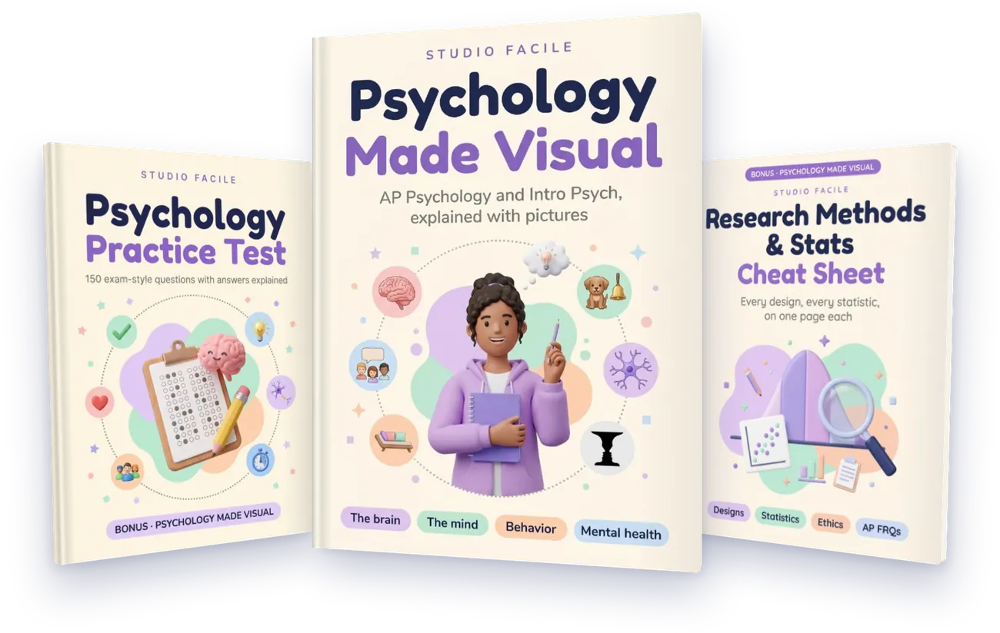
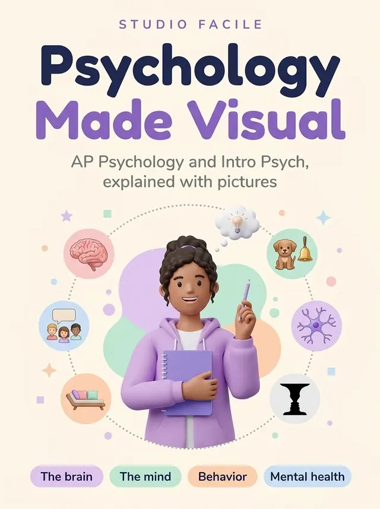
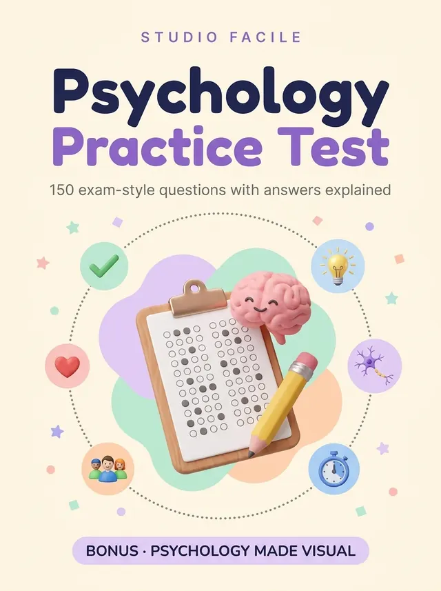
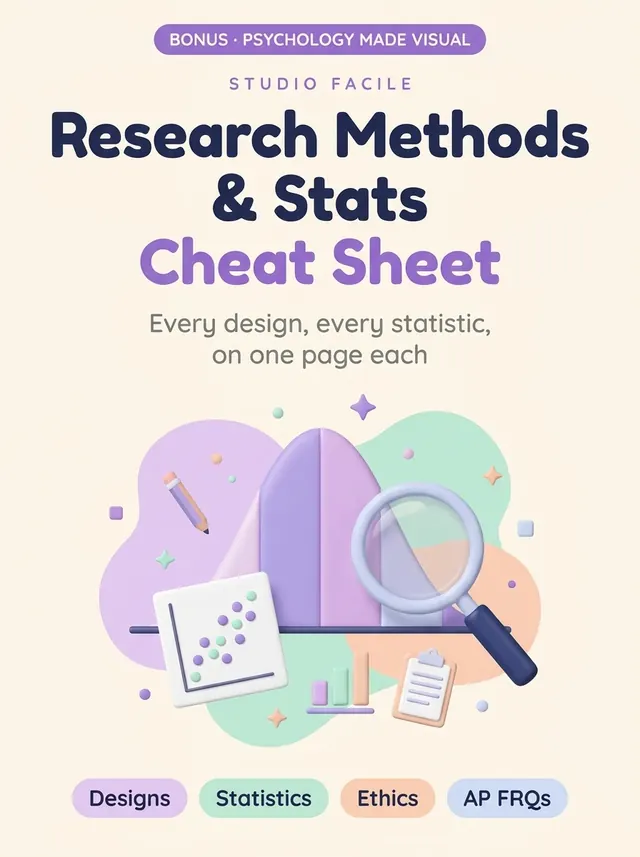

Neurons, memory, Piaget and Milgram, explained with pictures.
80 illustrated pages, one idea per page, following the five units of AP Psychology. Plus two free bonuses: a 150-question practice test with every answer explained, and a research methods and stats cheat sheet.

Real pages from the three books. Tap any page to see it full size.
Every page is built the same way, so you always know where to look.
The picture carries the idea: the neuron firing, the stages, the experiment.
Every pageEach box gives one fact, one term or one study, in plain words.
Every pageThe point students most often miss on the exam, at the bottom of the page.
Every pageThe book teaches. The practice test shows you what to review. The cheat sheet keeps research methods and stats on a few pages. The two bonuses are free.

80 pages · 6 partsPsychology as a science, the biological bases of behavior, cognition, development and learning, social psychology and personality, and mental and physical health. One idea per page.

24 pages · 150 questions150 exam-style questions in five blocks of 30, one per AP unit, with research and data questions in every block. An answer sheet to print and an answer key with one line on why, plus what to review if you missed it.

21 pages · made to keepVariables and designs, samples and controls, describing data (mean, standard deviation, the normal curve, z-scores, correlation), significance and ethics, with worked examples, and how to approach the two free-response questions.
The real table of contents. Tap a part to see its pages.
The book is organized around the AP Psychology course framework (2024), and the practice test gives each unit a block of 30 questions, with research and data questions in every block:
AP is a registered trademark of the College Board, which is not affiliated with, and does not endorse, this product. The 150 questions were written for this book: they are not official or released AP exam questions. The real exam sets its own scoring, so check the College Board exam page.
Six parts, in the order of the course: the science, the brain, cognition, development and learning, social psychology, and health.
Research methods and stats show up in every unit. The cheat sheet keeps the designs, the numbers and the traps on a few pages.
30 questions per block. Aim for at least 24 of 30; the key sends every wrong answer back to its pages in the book.
Five units and a lot of terms. Each idea on one illustrated page you can come back to before the exam.
The same core topics as a college intro course: the brain, memory, development, social psychology and disorders.
150 practice questions in five blocks and a last-minute page on the pairs students mix up.
The PDFs are emailed to you right after checkout.
For 30 days. If a file does not open, if what you received is not what this page describes, if you were charged twice or the download never arrived, write to us and we refund you in full.
One email to info@studiofacilebook.com is enough.
No. It is an independent illustrated study guide. It follows the five units of the AP Psychology course framework, but AP is a registered trademark of the College Board, which is not affiliated with and does not endorse this product. The 150 practice questions were written for this book; they are not official exam questions.
No. It is the illustrated material that goes with your course: one idea per page, to understand it and review it. Your teacher and your syllabus come first.
No. The topics are the core of a college Intro to Psychology course too. A few college topics outside the AP framework are not covered in depth.
By email, straight after you buy. Three PDFs you can read on your phone, tablet or computer.
Yes, as many times as you want, for yourself. The practice test has an answer sheet to print and fill in.
The book has 80 pages, the Practice Test 24 and the Cheat Sheet 21.
No. One payment of $27, and the three PDFs are yours.
Psychology is easier to remember when you have seen it. The book draws each idea, so you can picture it on the exam instead of trying to recall a paragraph.
See it.
Understand it.
Remember it.